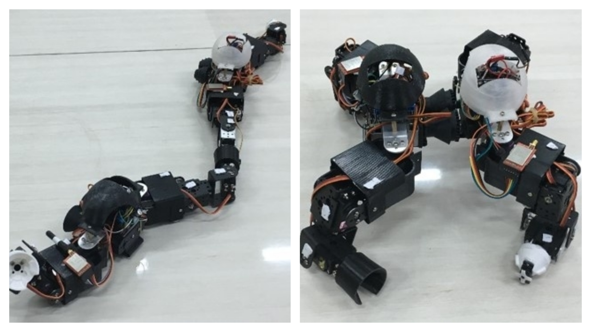
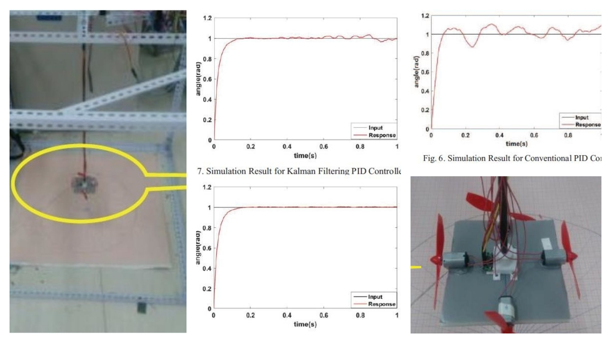
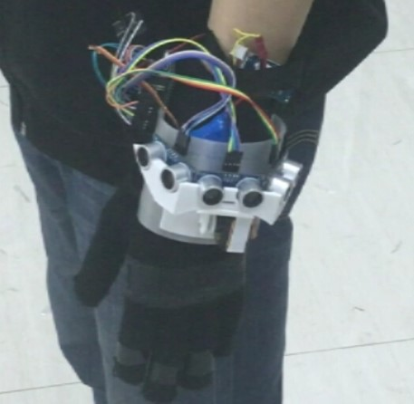
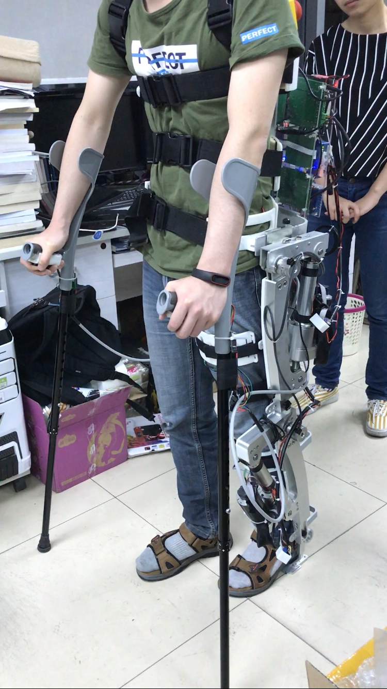
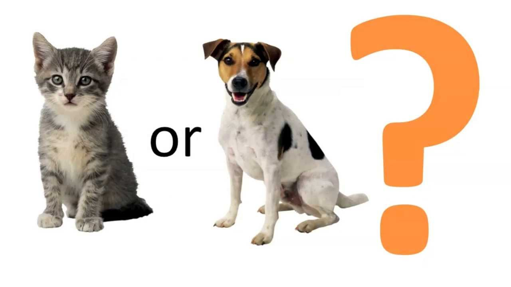
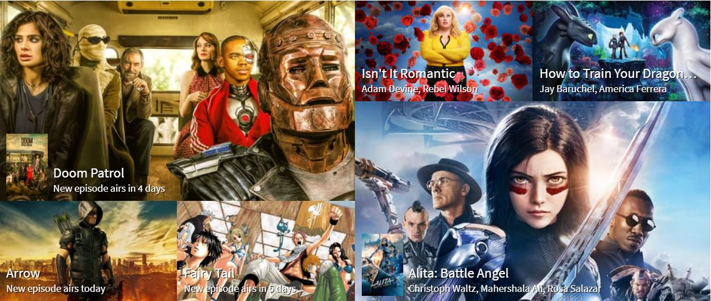

Research
In undergraduate study, I did several research projects about system design and control, robotic and sensor networks. I learned how to build a rubust system to finish specific task with the help of actuators and sensors.
In graduate study, I learned machine learning and how to applied these knowledge into prediction and signal processing. I also did research on optimization and networks.
My graduate study experience inspired me to apply machine learning methods into designing controllier and builting rubust system I wish to continue researching on applying machine learning method to build Intelligent System for my Ph.D. study.
Control System & Robotics
Deformable Snake-Quadruped Robot
In this project, we aimed to built a multi-terrain resecure reobot, which can be used in resucure after diseaster such as earchquake. The robot has two work form:
1.snake form: working in narrow area such as tunnel or under ruins
2.quadruped form: working in complex terrains, with obstacle such as rocks and steps
We designed a way to make
Video of Deformable Snake-Quadruped Robot
Wireless Intragastric Capsule

In this project, we aimed to design an edible intragastric capsule to help users lose weight based on the technology of intragastric balloons. patient SWALLOW this tiny robot to it stomach, where the capsule robot begin to work. It expand to 3-4 times of it's origional size, which makes the patient feels full and don't want to eat anymore.
Wind Pendulum Control System
We analysis the wind pendulum system and built the danamic model, applied PID and PID with Kalman Filter as the control method to control the pendulum system. We finished both simulation in Matlab and real-world test.
Networks & Sensor Networks
Ultrasonic Wave Blind Guide Glove

Moving Detection System of Lower-Limb Exoskeleton (Bachelor Thesis)
This project aimed to implement a moving detection system of the recovery training used lower-limb expskeletion
Optimization
Priced Based Priority Queue
This project aimed to look for a optimal priority arrangement of information transfer in the internet.
Machine Learning
Cat vs. Dog Species Recognition
In this project, I used Kaggle dataset of 15,000 dogs and 15,000 cat images to training a deeping learning model to indentify if a picture is a dog or cat(By the restriction of computering power in PC, only used 3,000 picutres as training set). By using VGG ConvNet, I built a 16 layers deep neural network, outcome a accuracy of 79% and loss of 0.55 in test set.
Human Facial Emotion Recognition
Moive Revenue Prediction and Related Recommend System
In this project, I built a regression system to predict movie revenue from TMBD 5,000 movies dataset